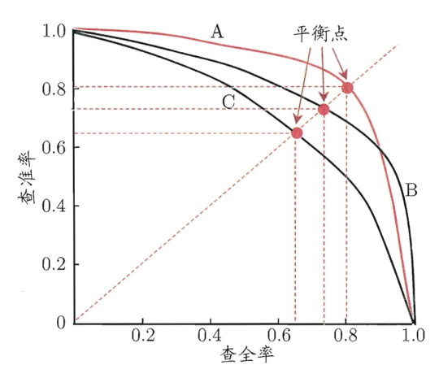
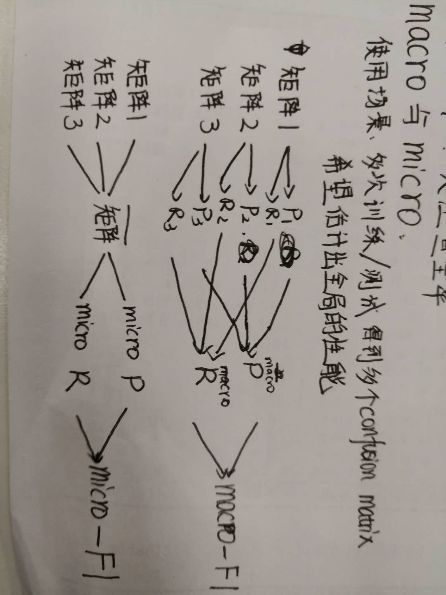
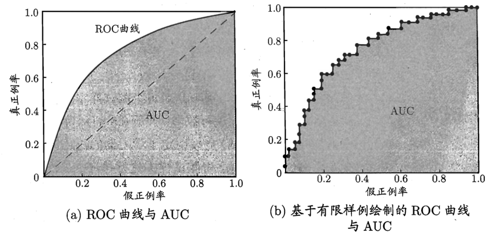

1. 2.3 性能度量
目的：衡量模型泛化能力和评价标准
均方误差 - mean squared error - MSE
E(f;D)=m1i=1∑m(f(xi)−yi)2
f：模型
D：数据
f(xi)：预测结果
yi：真实标记
E(f;D)=∫x∼D(f(x)−y)2p(x)dx
D：数据分布
p(x)：概率密度函数
错误率、精度、查准率、查全率
1.1. 2.3.1 错误率和精度
E(f;D)acc(f;D)E(f;D)acc(f;D)====m1i=1∑mI(f(xi)≠yi)m1i=1∑mI(f(xi)=yi)∫x∼DI(f(x)≠y)p(x)dx∫x∼DI(f(x)=y)p(x)dx==1−E(f;D)1−E(f;D)
1.2. 2.3.2 查准率、查全率与F1
查准率 = precision = 准确率：挑出的正例中有多少真的是正例
查全率 = recall = 召回率：多少正例被挑出来了
1.2.1. 混淆矩阵
横：预测
纵：真实 |
P |
N |
| P |
TP |
FN |
| N |
FP |
TN |
T：真实=预测
F：真实！=预测
P：正例
N：负例
查准率P=TP+FPTP
查全率R=TP+FNTP
对同一个模型来说，P和R是矛盾的度量
1.2.2. P-R曲线

根据P-R曲线比较两个模型的好坏：
- 若曲线不交叉（例如B和C），则外侧曲线的对应的模型B优于内侧曲线对应的模型
- 若曲线交叉（例如A和B），则只能在具体的条件下比较
- 比较曲线下面的面积，大则优
- 比较平衡点（Break-Even Point）的值，P=R时的值，大则优
- F1度量，调和平均
F1=P+R2×P×R=样本数+TP−TN2×TP
- Fβ度量，加权调和平均
Fβ=(β2×P)+R(1+β2)×P×R
β<1：更注重查准率
β=1：相当于F1
β>1：更注重查全率
1.2.3. macro与micro
使用场景：多次训练/测试得到多个confusion matrix，希望能估计出全局的性能

1.3. 2.3.3 ROC与AUC
把预测结果根据是正类的概率排序，排序本身的质量好坏，体现了“一般情况下”泛化能力的好坏。
真正例率：正例中预测正确的比例
TPR=TP+FNTP
假正例率：负例中预测错误的比例
FPR=TN+FPFP
ROC曲线：由TPR和FPR组成的曲线
AUC：Aera Under Curve，ROC曲线下面的面积

AUC=21i=1∑m−1(Xi+1−Xi)⋅(yi+yi+1)
[?]为什么是frac12(yi+yi+1)？这种情况下应该yi=yi+1
1.4. 2.3.4 代价敏感错误率与代价曲线
代价矩阵 cost matrix
最小化错误次数 --- 最小化“总体代价”
ROC曲线 --- 代价曲线 cost curve